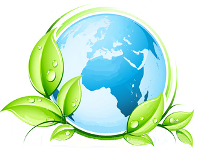

¿Porque el 26 de Abril? ◄ Volver ≡
El Día de la Tierra es 22 de abril,
pero este año va ser un martes. Es una celebración oficial en 192
países. El 26 de abril será el sábado después de Día de la Tierra,
dando a los Scouts más tiempo para plantar sus árboles.
Asimismo, desde abril 21 a abril 27 es la Semana de la Tierra.
Cada país es probable que tenga una ONG que se centran en el Día de la Tierra,
la Semana de la Tierra, o en los aspectos de medio ambiente, que les
ayudará a usted y a su grupo para hacer este proyecto en su comunidad.